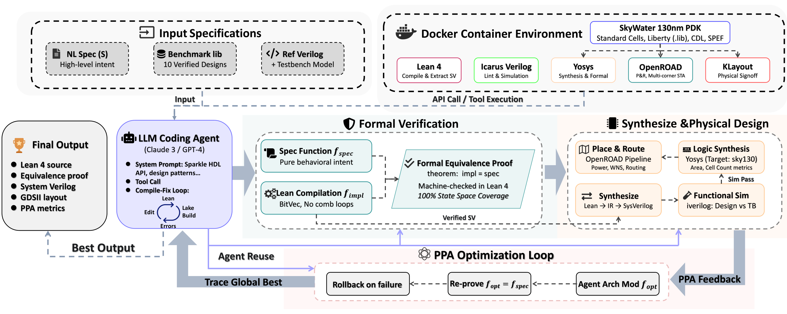

Builds a typed hardware DSL embedded in Lean 4 with SystemVerilog extraction and a REPL; LLM agents generate designs and kernel-checked equivalence proofs.
Abstract
Hardware infrastructure is a critical bottleneck for LLM-driven circuit design, limiting what agents can express, compile, and iteratively refine within an agentic loop. To address this bottleneck, we introduce CKTLEAN, a typed hardware infrastructure embedded in Lean. It supports hardware description, compilation to SystemVerilog, and interactive type-checking and proof feedback through a persistent read-eval-print loop (REPL). On this foundation, we build CKTFORMALIZER, an agent framework for hardware generation, repair, optimization, and source-level equivalence proving. We evaluate structural correctness through compilation, functional correctness through RTL and gate-level simulation, and formal correctness through proofs relative to stated specifications. Across VerilogEval, RTLLM, ResBench, and CVDP, CKTFORMALIZER with CKTLEAN achieves compilation rates of 91.1%-99.4%. Among designs that pass RTL simulation, 95.4%-100.0% jointly complete synthesis and place-and-route and pass design-rule and layout-versus-schematic checks. In a separate evaluation on 30 VerilogEval problems, interactive proof-state feedback raises kernel-accepted equivalence proof completion from 53.3% to 63.3%. Hardware evaluation feedback also guides architecture exploration and iterative power, performance, and area (PPA) optimization, with synthesis-area reductions of up to 58.6% in the optimization loop. These results suggest that typed representations and explicit proof-state feedback help structure the agentic loop: compiler diagnostics guide targeted repairs, while proof-state feedback helps agents identify what remains to be proved and determine the next proof step. Project Page: https://ckt-formalizer.github.io/
Problem
LLM-driven hardware design that targets Verilog inherits the language's lack of static guarantees and the ambiguity of natural language. Agents get weak feedback for iterative repair and cannot prove that designs are correct.
Approach
CktLean is a dependently-typed hardware DSL embedded in Lean. It encodes bit widths as BitVec types, rules out combinational loops by construction, and enforces exhaustive pattern matching. A #synthesizeVerilog metaprogram emits SystemVerilog, and a persistent REPL gives type-checking and proof-state feedback. CktFormalizer is a Claude-based agent that generates, repairs, and PPA-optimizes designs, evaluated through simulation and the OpenROAD/SkyWater 130nm flow. The agent also writes source-level equivalence proofs in Lean.

Figure 2 : Overview of the CktFormalizer pipeline. Given a natural language specification \mathcal{S} and an optional reference Verilog implementation \mathcal{V}_{\text{ref}} , a coding agent \mathcal{A} translates \mathcal{S} into Lean code \mathcal{L} using few-shot examples and iterative error correction. The Lean compiler type-checks \mathcal{L} and extracts synthesizable SystemVerilog \mathc
Results
Across VerilogEval, RTLLM, ResBench and CVDP, compilation rates range from 91.1% to 99.4%. Among designs passing RTL simulation, 95.4%-100% also pass synthesis, place-and-route, DRC and LVS. Proof-state feedback raises kernel-accepted equivalence proof completion on 30 VerilogEval problems from 53.3% to 63.3%. The optimization loop reduces synthesis area by up to 58.6%.